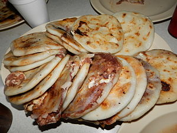
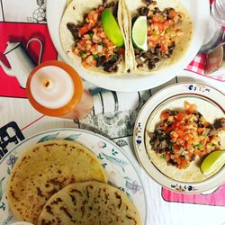

En pupusas (arroz o maíz) ofrecemos de: 
-Fríjol
-Fríjol con Queso
-Queso
-Queso con Loroco
-Chicharrón
-Revueltas
-Pupusa loca
En platos típicos ofrecemos:
-Sopa de tortilla
-Bistec a la plancha
-Tacos
-Burritos
-Tortas
También se ofrecen frescos y licuados naturales de todo tipo.